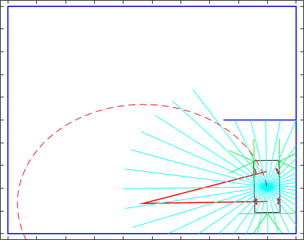
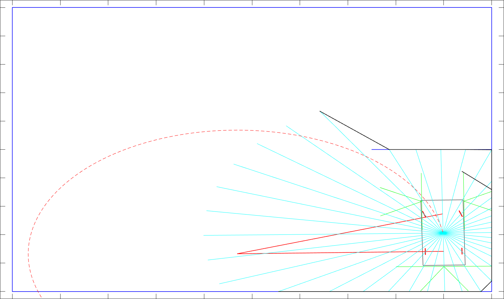

Matlab
Under construction
Vehicle will try using sensors(light blue and green lines) avoid obsacle using planned (red) line. however for now memory of obstacles is not implemented and this can result into hitting wall which is based on vehicle view not there. on first image we can see vehicle while driving and on second we can see in black lines what vehicle sees 
Full vehicle functinality.
Memory for walls need to be added so the vehicle is sure that the wall is not there anymore before going to position